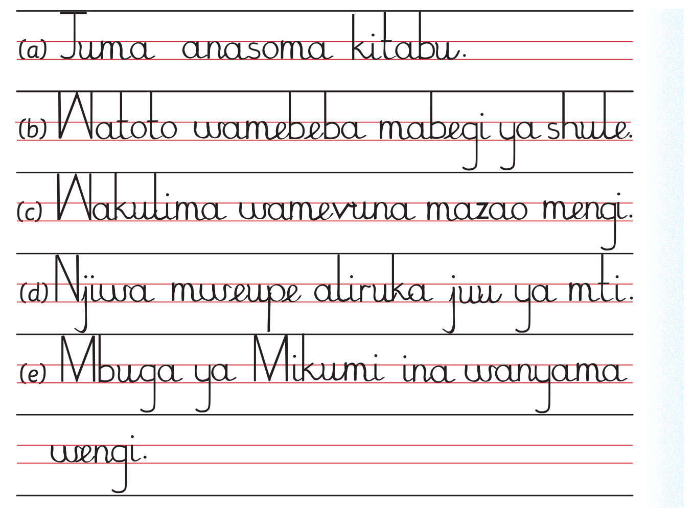

Kuandika sentensi kwa mwandiko wa kuungaZoezi la nane
1. Nakili sentensi hizi kwa mwandiko wa kuunga:
Zoezi la nane1. Nakili sentensi hizi kwa mwandiko wa kuunga:
1. Nakili sentensi hizi kwa mwandiko wa kuunga; tumia eneo la kuandikia, kibodi au Breli.

a. Juma anasoma kitabu. be. Watoto wamebeba mabegi ya shule. che. Wakulima wamevuna mazao mengi. de. Njiwa mweupe aliruka juu ya mti. e. Mbuga ya Mikumi ina wanyama wengi.
2. Andika sentensi kumi sahihi kwa mwandiko wa kuunga.
Tumia maneno kutoka katika kisanduku hiki:
2. Andika sentensi kumi sahihi kwa mwandiko wa kuunga.
Tumia maneno kutoka katika kisanduku hiki:
2. Andika sentensi kumi sahihi kwa mwandiko wa kuunga. Tumia maneno kutoka katika kisanduku hiki; tumia eneo la kuandikia, kibodi au Breli.